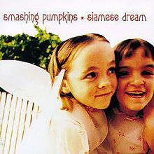
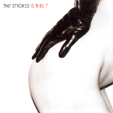
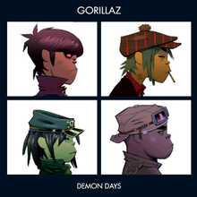
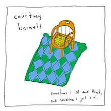

Alternative rock began in the 1980s as a style of rock somewhere between punk and folk, and which tended to remain underground, with a few exceptions. The genre exploded in the early 90s, when all of a sudden alternative rock bands became the most popular artists in America and the UK. By the late 90s alternative rock had started to move away from the mainstream, but it came back in the early 2000s with the post punk revival scene. The genre now describes a huge variety of artists, some gaining huge international success, and others remaining underground.
1980s
The alternative scene of the 1980s grew out of the post punk scene of the late 70s and early 80s. Bands started mixing the post punk style with acoustic instruments and lower quality recording techniques to create an underground style of music that started gaining traction quickly. The genre stood in opposition to the mainstream style of music at that time, which was heavily produced synthpop, R&B, and glam rock, but it wouldn't be long until alternative rock became the mainstream instead.
Best and Most Noteworthy Albums
Fig. 1Fig. 2Fig. 3Fig. 4Fig. 5Fig. 6
Fig. 1: The Replacements - Let it Be
Fig. 2: R.E.M. - Murmur
Fig. 3: The Smiths - The Queen is Dead
Fig. 4: Pixies - Doolittle
Fig. 5: The Stone Roses - The Stone Roses
Fig. 6: Sonic Youth - Daydream Nation
1990s
The 90s were a huge decade for alternative rock, and it all began in 1991, with Nivrana's major label debut, Nevermind. This album defined grunge, a style of rock music with loud, sludgy guitars and raspy, emotional vocals, and it finally brought alternative rock fully into the mainstream, capturing the spirit of young people throughout the United States. Grunge would die out only a few years later, with the suicide of Nirvana's frontman, Kurt Cobain, but other styles of alternative rock continued to gain popularity. In the UK, Britpop, a lighter style of rock, acheived an equal level of nationwide popularity, with a hugely publicized rivalry between Blur and Oasis, the two most popular bands in the country. Meanwhile, other styles of alternative rock, such as Emo, Shoegaze, Dream Pop, and Indie Rock remained more underground, but still found audiences around the world.
Best and Most Noteworthy Albums
Fig. 1Fig. 2Fig. 3Fig. 4

Fig. 5Fig. 6
Fig. 1: Nirvana - Nevermind
Fig. 2: Radiohead - OK Computer
Fig. 3: Weezer - Weezer
Fig. 4: My Bloody Valentine - Loveless
Fig. 5: Smashing Pumpkins - Siamese Dream
Fig. 6: Cocteau Twins - Heaven or Las Vegas
2000s
The 00s started off similarly to the 90s in terms of rock music, with The Strokes' debut, Is This It gaining huge popularity and kickstarting a new garage rock, post punk, and new wave inspired movement throughout the first half of the decade. Meanwhile, the genre was expanding in all directions, from country to electronic to folk to metal. It slowly began to move back underground, though, as rap music started taking over as the most popular style of music by the mid to late 2000s.
Best and Most Noteworthy Albums

Fig. 1Fig. 2Fig. 3Fig. 4Fig. 5

Fig. 6
Fig. 1: The Strokes - Is This It
Fig. 2: Arcade Fire - Funeral
Fig. 3: Radiohead - In Rainbows
Fig. 4: Wilco - Yankee Hotel Foxtrot
Fig. 5: MGMT - Oracular Spectacular
Fig. 6: Gorillaz - Demon Days
2010s
By the 2010s, alternative has become an umbrella term for a huge variety of music artists, even going beyond just rock. Within rock, though, many bands are playing with a tightly produced psychedelic style, others are sticking to the indie rock sound of the 90s, and others are going towards more conceptual and experimental styles, like art rock/pop. And while rap and R&B continue to be the most popular style of music, many alternative artists are breaking through and gaining a huge following.
Best and Most Noteworthy Albums
Fig. 1Fig. 2Fig. 3Fig. 4

Fig. 5Fig. 6
Fig. 1: Tame Impala - Lonerism
Fig. 2: Beach House - Teen Dream
Fig. 3: Mac DeMarco - Salad Days
Fig. 4: Deerhunter - Halcyon Digest
Fig. 5: Courtney Barnett - Sometimes I Sit and Think, and Sometimes I Just Sit
Fig. 6: King Krule - The Ooz
Post Rock
As rock was expanding in new directions and going in and out of popularity, some bands have taken the basic idea of rock, but using its instrumentation to create more experimental and boundless music. The music itself is very diverse, taking influence from jazz, noise, ambient, and countless other genres to create a completely unique style of music. A lot of post rock has no vocals, but other bands do include them, ranging from spoken word to singing to screaming. It's a genre that's difficult to define and categorize, but the artists within it are creating music that is innovative and unique.
Best and Most Noteworthy Albums
Fig. 1Fig. 2Fig. 3Fig. 4Fig. 5Fig. 6
Fig. 1: Godspeed You! Black Emperor - Lift Your Skinny Fists like Antennas to Heaven
Fig. 2: Talk Talk - Spirit of Eden
Fig. 3: Tortoise - TNT
Fig. 4: Swans - Soundtracks for the Blind
Fig. 5: Sigur Ros - Agaetis Byrjun
Fig. 6: Fishmans - Long Season